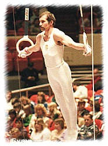

Ferenc Donáth (HUN)
1980 Olympic Team Bronze
Medalist
 Medal
Total Olympic
Games:
1 Bronze
World Cup: 2 Bronze
|
Donath was born on June 28,
1954. He was coached by Dezso Bordán at Újpesti Dózsa.
Donath's career was a long one -- he competed in five World Championships
(1974-1983)!
Competition Results
- 1972
Jr. USSR-HUN: 2nd Team, 4th AA
- 1973
- University Games: 19th AA
-
- 1974
- World Championships: 4th Team, 23rd AA
-
- 1975
- HUN Championships: 3rd AA
- Milk Meet: 5th AA
- Pre-Olympics: 9th AA, 6th RG
-
- 1976
- Calgary International: 1st PH, 3rd PB
- Cup of Sofia: 1st AA
- ESP-HUN Dual Meet: 1st Team, 2nd AA
- HUN Championships: 3rd AA
- HUN-CUB Dual Meet: 1st Team, 3rd AA
- Milk Meet: 5th AA
- Olympic Games: 4th Team, 13th AA, 4th RG, 6th HB
- TCH-HUN Dual Meet: 1st Team, 3rd AA
-
- 1977
- Champions All: 3rd AA
- Dynamo Championships: 1st AA
- European Championships: 6th AA, 5th RG, 6th PB, 8th
PH, 8th HB
- European Tournament of Ingelheim: 2nd AA
- HUN Championships: 3rd AA
HUN Masters Tournament: 1st AA
- ITA-HUN Dual Meet: 1st Team, 2nd AA
- Milan International: 1st AA
- Moscow News: 8th AA, 1st PH
- Riga International: 3rd AA
- University Games: 15th AA
- USA-FRG-HUN-FRA: 5th AA
- World Cup: 9th AA, 4th PH, 6th RG, 6th HB, 8th PB
-
- 1978
- Chunichi Cup: 11th AA
- FRA-HUN-POL Tri-Meet: 1st Team, 1st AA
- HUN Championships: 1st AA
- HUN Intl. Championships: 1st AA
HUN Masters Tournament: 1st AA
- ITA-HUN Dual Meet: 1st Team, 3rd AA
- World Championships: 6th Team, 16th AA, 4th PH, 8th RG
- World Cup: 8th AA, 4th V, 5th PH, 5th RG, 6th HB
-
- 1979
HUN Championships: 1st AA
- Police Spartakiade: 1st AA
- University Games: 12th AA, 2nd PH, 3rd RG
- World Championships: 6th Team, 17th AA, 8th RG
- World Cup: 6th AA, 3rd RG, 3rd
PB, 4th PH, 7th V, 7th
HB
-
- 1980
- Chunichi Cup: 4th AA
- Olympic Games: 3rd
Team, 12th AA, 6th PH
- World Cup: 9th AA, 5th PB
-
- 1981
- ESP-HUN Dual Meet: 1st Team, 1st AA
- European Championships: 11th AA
HUN Championships: 1st AA
- World Championships: 8th Team, 18th AA, 7th RG
-
- 1982
- Budapest Invitational: 3rd V, 3rd HB
DTB Cup: 20th AA
- Ennia Gold Cup: 13th AA, 3rd PH
- Intl. HUN Championships: 11th AA
USA-HUN Dual Meet: 3rd AA
-
- 1983
- ITA-HUN-NOR Tri-Meet: 2nd AA
- Pre-Olympics: 11th AA, 6th RG, 6th PB, 8th PH
- World Championships: 6th Team, 14th AA, 6th RG
-
- 1984
American Cup: 12th AA (prelims)
- CSSR Spartakiade (Olomouc): 21st AA, 7th RG
This page was last updated on August 27, 2007.
© Gymn Forum